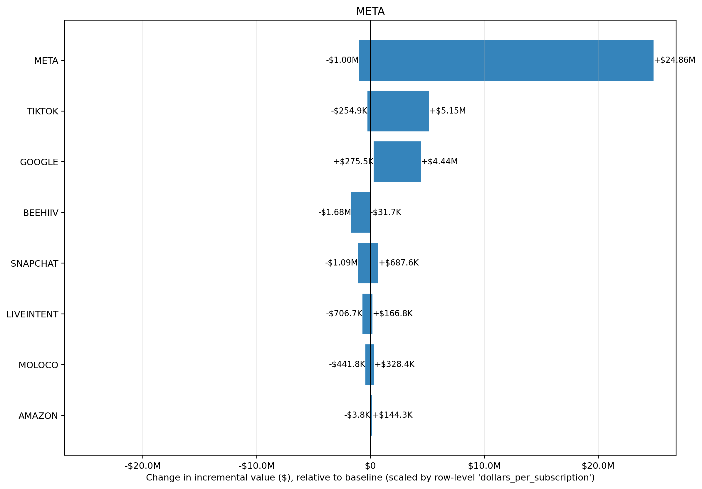

Input CSV: tornado_meta.csv
Channels altered: META
Value Scaling: scaled by row-level 'dollars_per_subscription'
Selection objective: total_new_value
Best prior setup: ROI_PRIOR_OVERRIDES: NA(mu=NA, sigma=NA) | STRUCTURAL_OVERRIDES: NA(mu=NA, sigma=NA)
| prior_setup | total_new_value | delta_value_vs_baseline | delta_roi |
|---|---|---|---|
| ROI_PRIOR_OVERRIDES: NA(mu=NA, sigma=NA) | STRUCTURAL_OVERRIDES: NA(mu=NA, sigma=NA) | $99.54M | +$43.95M | 228.67% |
| ROI_PRIOR_OVERRIDES: NA(mu=NA, sigma=NA) | STRUCTURAL_OVERRIDES: NA(mu=NA, sigma=NA) | $84.37M | +$28.77M | 149.73% |
| ROI_PRIOR_OVERRIDES: NA(mu=NA, sigma=NA) | STRUCTURAL_OVERRIDES: NA(mu=NA, sigma=NA) | $72.26M | +$16.66M | 86.71% |
| ROI_PRIOR_OVERRIDES: NA(mu=NA, sigma=NA) | STRUCTURAL_OVERRIDES: NA(mu=NA, sigma=NA) | $66.30M | +$10.70M | 55.69% |
| ROI_PRIOR_OVERRIDES: NA(mu=NA, sigma=NA) | STRUCTURAL_OVERRIDES: NA(mu=NA, sigma=NA) | $63.32M | +$7.73M | 40.20% |
| channel | delta_value | delta_roi |
|---|---|---|
| META | +$37.43M | 44.55% |
| TIKTOK | +$5.58M | 3.18% |
| +$4.09M | 0.40% | |
| MOLOCO | +$333.1K | 0.40% |
| AMAZON | +$187.2K | 11.89% |
| SNAPCHAT | -$666.7K | -0.15% |
| LIVEINTENT | -$840.5K | -1.05% |
| BEEHIIV | -$2.17M | -6.61% |
Largest sensitivity ranges are in META (-$1.00M to $24.86M); TIKTOK (-$254.9K to $5.15M); GOOGLE ($275.5K to $4.44M). Biggest upside scenario is META at $24.86M, while the largest downside scenario is BEEHIIV at -$1.68M. Bars crossing zero indicate the channel can either help or hurt depending on prior assumptions; wider bars indicate greater uncertainty and model sensitivity.
